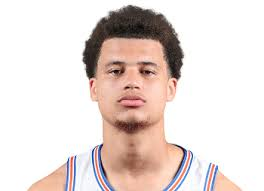

Walter Clayton Jr.
This is Walter Marterry Clayton Jr. He was born on March 6th, 2003 in Sebring, Florida. He attended Lake Wales High School in his freshmen year. Before he went to Bartow High School to finish his high school career. Clayton was considered a better football prospect than basketball prospect. After high school he commited to play basketball at Iona University. He played two years at Iona after hitting the transfer portal and commiting to Florida. Clayton has declared for the draft following the season and will likely be a lottery pick.
Some of Clayton's accomplishments include :
- WAAC Player of the Year(2023)
- SEC Tournament Title (2025)
- NCAA Tournaments Title(2025)
- Second-team ALL-SEC selection(2024)
- First-team All-SEC selection(2025)
- FIrst-team All American(2025)
- First time beating a #1 team on the road(2025)
- Most Oustanding Player(MOP) NCAA Tournament(2025)
I am very grateful for this man. His clutch factor is insane ❤️❤️